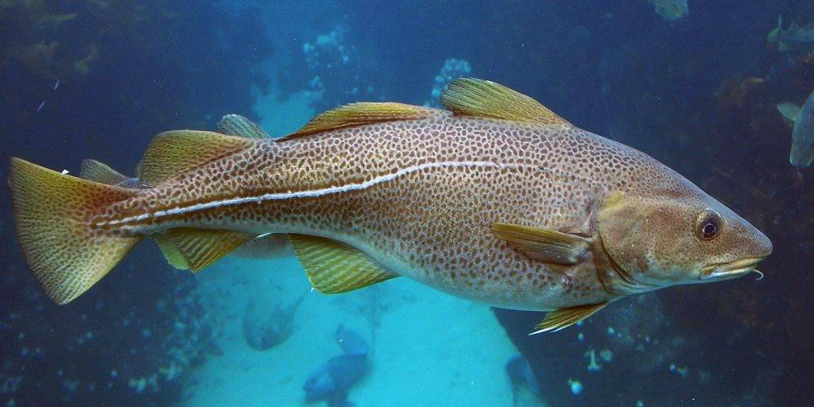
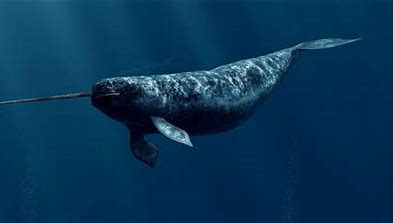
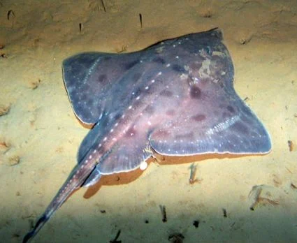
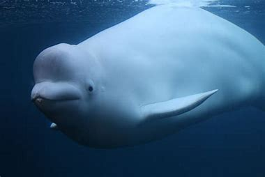
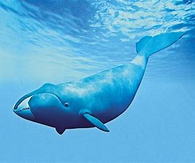

|

Морска треска
Това е трапезна риба, с максимален размер 1.8 метра. Тежи между 5-12 килограма и е една от най-питателните риби,
заради ниското и съдържание на мазнини. Живее предимно около Скандинавия, Русия и Грендландия. Всеядна риба е и се води уязвима от изчезване.
|
|

Нарвал
Нарвалът е зъбат кит живеещ на Арктика. Характеризира се с големия рог при мъжките индивиди, който има подобни функции с тези на еленските
рога.Нарвалът е месояден и предпочита студените води. Възрастните нарвали достигат дължина 6 метра и тежат 2 тона. Имат една от най-дъл
гите бремености в животинския свят-15 месеца.
|
|

Арктически скат
Те имат подобни характеристики с обикновените скатове, с разликата че са по приспособлени за студените води. Кожата им
е по бяла и са по-малки. Дънни риби са и се хранят с по-малки животни. Въпреки големите им плавници те са слаби плувци.
|
|

Белуга
Белугата е в същото семейство като нарвалите. Разпространени са в полярните и субполярни води на Северния ледовит океан. Имат
характерен бял цвят и други адаптации за живот в арктическите морета, като липсата на гръбна перка.Мъжките достигат 6 m дължина и 1600 kg
маса, а женските 5 m и тегло 1000 kg. Водят се застрашени от изчезване.
|
|

Грендландски кит
Гренландските китове са вид едри бозайници от семейство Гладки китове. Живеят в Северния ледовит океан. Имат масивно
тъмно тяло без гръбна перка и достигат 20 m дължина. Максималната им маса е до 150 t, като по този показател са на второ място сред жив
отните след синия кит.
|